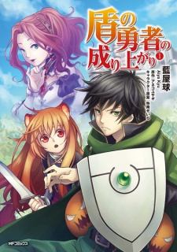

<section id="content">
	<div id="container">
		<div class="manga-classic">
			
			<p class="manga-title">Hunter x Hunter</p>
			<p class="manga-genre"><span class="genre">Genre:</span>Action, Adventure, Comedy, Martial Arts</p>
			<p class="manga-description"><span class="description">Description:</span> <span class="details">Hunters are a special breed, dedicated to tracking down treasures, magical beasts, and even other men. But such pursuits require a license, and less than one in a hundred thousand can pass the grueling qualification exam. Those who do pass gain access to restricted areas, amazing stores of information, and the right to call themselves Hunters.
						</span> </p>
		</div>

		<div class="manga-classic">
			
			<p class="manga-title">Tate no Yuusha no Nariagari</p>
			<p class="manga-genre"><span class="genre">Genre:</span>Action, Mature, Drama, Adventure</p>
			<p class="manga-description"><span class="description">Description:</span> <span class="details">Naofumi Iwatani, an uncharismatic Otaku who spends his days on games and manga, suddenly finds himself summoned to a parallel universe! He discovers he is one of four heroes equipped with legendary weapons and tasked with saving the world from its prophesied destruction. As the Shield Hero, the weakest of the heroes, all is not as it seems. Naofumi is soon alone, penniless, and betrayed. With no one to turn to, and nowhere to run, he is left with only his shield. Now, Naofumi must rise to become the legendary Shield Hero and save the world! </span> </p>
		</div>
	</div>
</section>
	